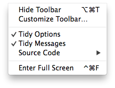
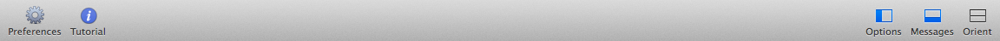

Balthisar Tidy has a very configurable display. To hide (or show) the Tidy Options panel, follow the steps below.
Select Tidy Options from the View menu. If the panel is currently visible you will see that is is checked. 
You can confirm that the menu items is now unchecked, and the options panel is hidden.
You can also easily toggle the visibility of the Tidy Options panel using the Options button on the document window’s toolbar. 